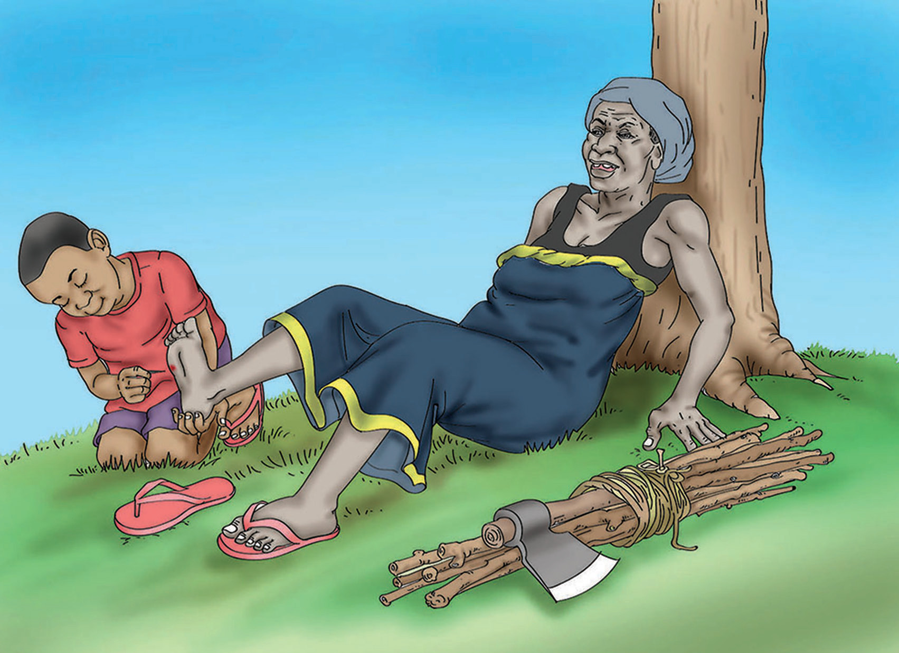

Baada ya kumtolea bibi mwiba, Jumanne alianza kuondoka. Bibi alimuuliza, unaelekea wapi? Jumanne akajibu, ninakwenda nyumbani. Bibi akamwambia, ninaomba unisaidie kubeba kuni zangu. Jumanne akajibu, sawa bibi! Jumanne alimsaidia bibi kubeba kuni hadi nyumbani kwake. Bibi alifurahi na kumwambia, wewe ni kijana mzuri.
Maswali
- 1. Nani aliamka mapema?
- 2. Bibi alipata tatizo gani alipokuwa porini?
- 3. Nani alimsaidia bibi kutoa mwiba?
- 4. Je, Jumanne alikuwa na tabia gani?
- 5. Hadithi hii inatufundisha nini?
- 6. Eleza umuhimu wa kusaidiana.
- 7. Wasimulie wenzako hadithi ya Bibi Chausiku.